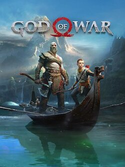
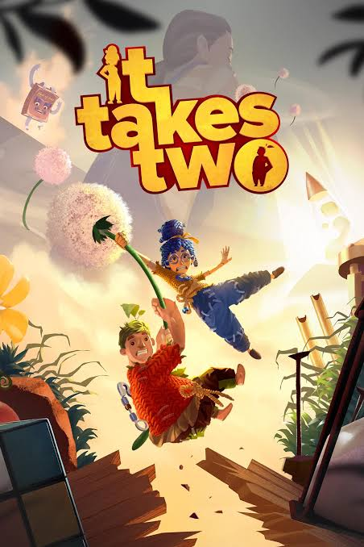
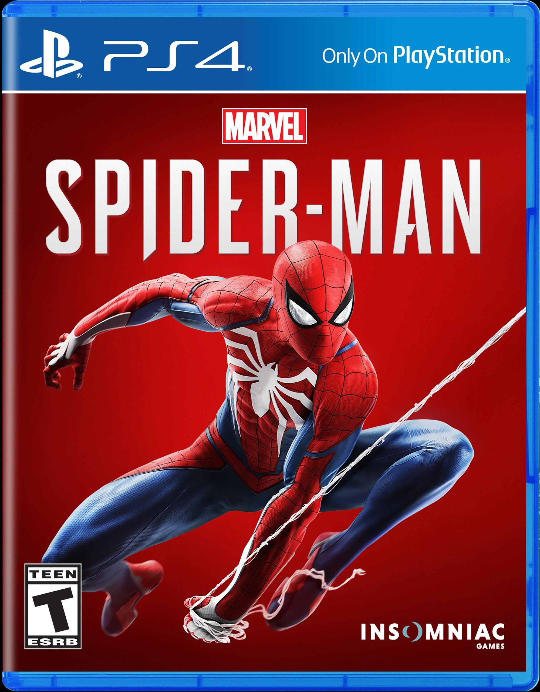
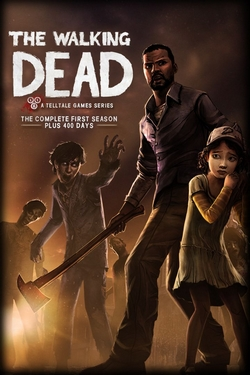
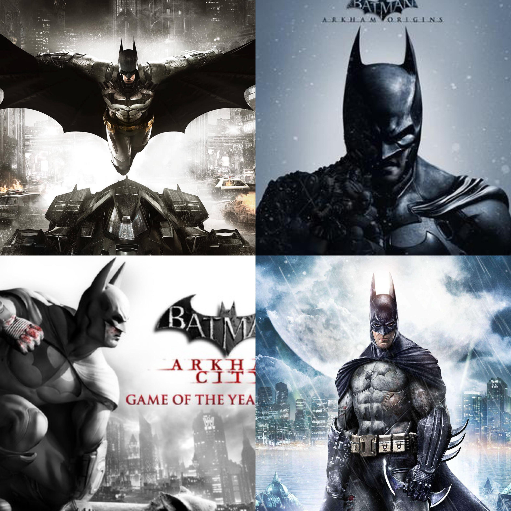
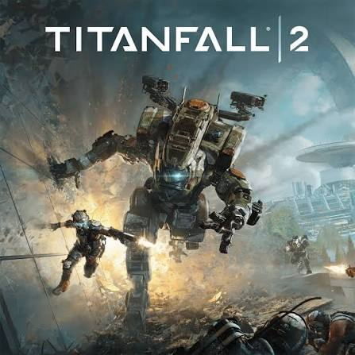
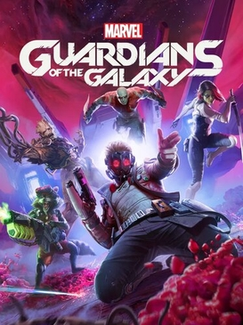
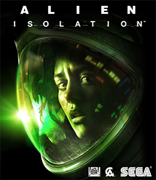
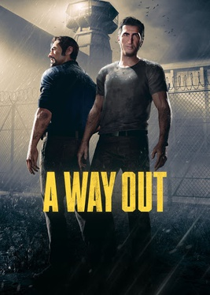

Everybody has a favorite something. Whether that is a favorite show, movie, food, drink, or more. For me, I have a lot of favorite video games that come to mind. Some games I have played recently, and some I have come across in my childhood, and I have adored them ever since. Here are my top 10 video games that I enjoy. This list is entirely my opinion, and the top 10 aspect of this does not do it enough justice, since every game listed on here is almost equally as good as the other. So take it with a grain of salt and see it as a not-so-huge difference in quality. As someone who loves story games and was or currently is looking for quality games, please check these games out if you have a chance to do so, or looking for something to buy for yourself or a gift to someone else.

This is easily one of the top favorite games that has ever been released. Made by Rockstar, the same creators of the Grand Theft Auto series. This game is a prequel to the first game, so there is nothing you need to know from the first one before going into this game. The realism is extraordinary, the story is beautiful and emotional, and you can make some of your own choices to bring up or down your reputation and can be seen as a good outlaw or a bad outlaw. You can get attached to all characters, especially the main protagonist, Arthur Morgan. He is such a well-written character, and to follow him on his journey is an honor to do. I love every bit of this game.

If you are highly into Greek mythology or Norse mythology, this is a must-pick-up masterpiece of a game, only on PlayStation and PC. It features Kratos, the son of Zeus, and his son Atreus adventuring to look for the highest mountain in all of the realms to spread his wife’s ashes as her last wish. It has fantastic storytelling and smooth gameplay with very rare loading screens. It is just like a long movie. It took me 54 hours to get all of the achievements, and it is such a blast to play. I wish I could experience it again, or even play it in a huge theater.

This is a MUST-PLAY GAME with either your friends or especially your significant other. It is made by the same developers that made A Way Out, at our number 10 spot. So, it has couch co-op and online co-op with the same screen mechanics. This game is about a husband and wife wanting a divorce since they do not interest each other anymore, and their daughter made a clay and wooden doll of them, and as they fall asleep, they wake up as the dolls and try to figure out how to get back into their human form. It is a very long game, with new mechanics in every chapter of the game. There is something new every time, and you can explore the worlds that are in it. It is a highly funny and emotional rollercoaster of a game, and it gets better as you keep playing. I cannot wait to see what the developers do with their other games.

The Spider-Man games are only available on PC and PlayStation, but it is highly recommended to get these games since the combat, the web-swinging, and story are incredible. I have spent 51 hours on the first Spider-Man game, and that is to complete all of the achievements. The stories are short for the most part, unfortunately, but going around and doing everything literally in the city is a fun hobby to do.

These games are very different from the rest. In this game, the story and outcome of characters are entirely based on the choices you make. The Walking Dead’s story is so good that you can feel for the characters, have empathy towards them, feel bad when you make a bad choice, or make them mad. This game can be highly emotional, and each chapter is at least an hour long, and it goes on for each of the 4 seasons, including extra games. But in general, Telltale games are popular amongst everyone, and have really good stories to feature, even for Batman and Minecraft!

These are the 4 best Batman games that are available to purchase now. The world that you are put in playing as Batman is straight up a childhood dream, with facing all of the villains that are popular in the comics and shows. The combat system is a smooth, flowing system, incredibly satisfying, and ties into the fiction part greatly. Highly recommend picking up all 4 games, especially while they are on sale since it can be below $20 for all of them.

Players and enemies can control big robots called titans. They are heavily advanced technology that you can easily grow attached to, as I have. The gameplay and movement are shockingly smooth. The campaign is not as long, unfortunately, but it still has many mechanics. In my opinion, it is superior to most Call of Duty campaigns.

Funny, action-packed, and long game. The story and voice acting are incredible for the Guardians. You can make dialog choices that have the characters remembering what you said, or any other choice that can affect your mission since you are the leader, Star-Lord. However, it is all the same story and missions, and the ending will always be the same.

If you do not like getting scared, it is best to not play this game. You are trapped in a space station, and the only life surrounding you is the Xenomorph Aliens that took over the station. It is one of the best horror games that is playable. Very long game, fortunately, and still a beautiful masterpiece. The gameplay is simple, but still great, and the story behind everything connects well.

This game requires 2 players to play, whether it is on your couch or online. It features two inmates who escape prison and take revenge on the person who put them in that prison. To put the characters in short, Leo is a funny Italian guy, and Vincent is the average American husband who knows his stuff. Both characters are great to play as. I have played this game with my friend for hours until 1 in the morning, and the game hasn’t even finished. It is a lengthy game, but very addictive. Great writing and voice acting, and the many choices that you can make depending on your gameplay style, or just for heck of it. And the best part is that the ending would not change because of those choices. The ending is mind-blowing to say the least. Try not to spoil yourself.